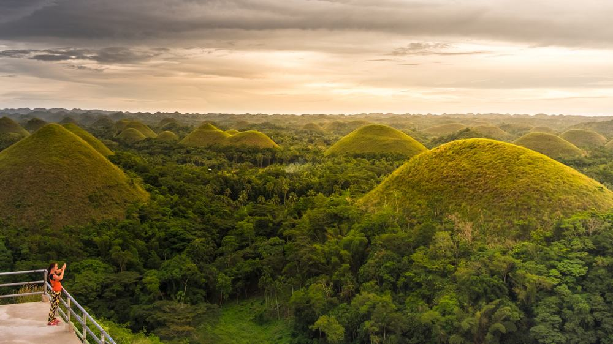
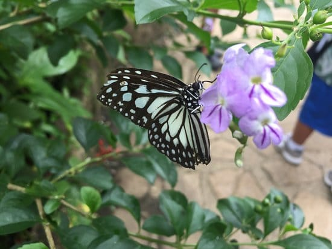
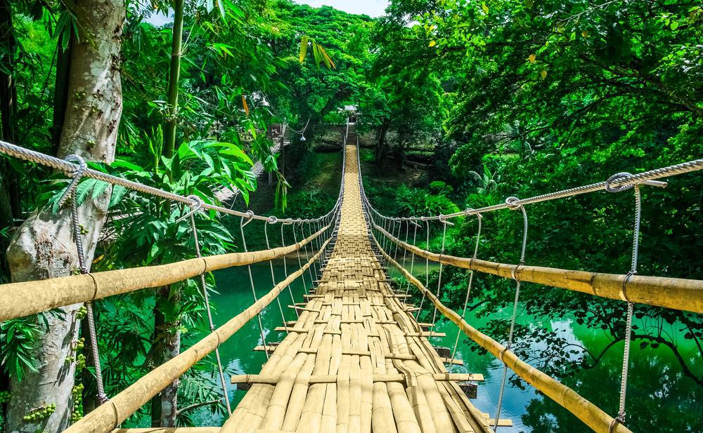
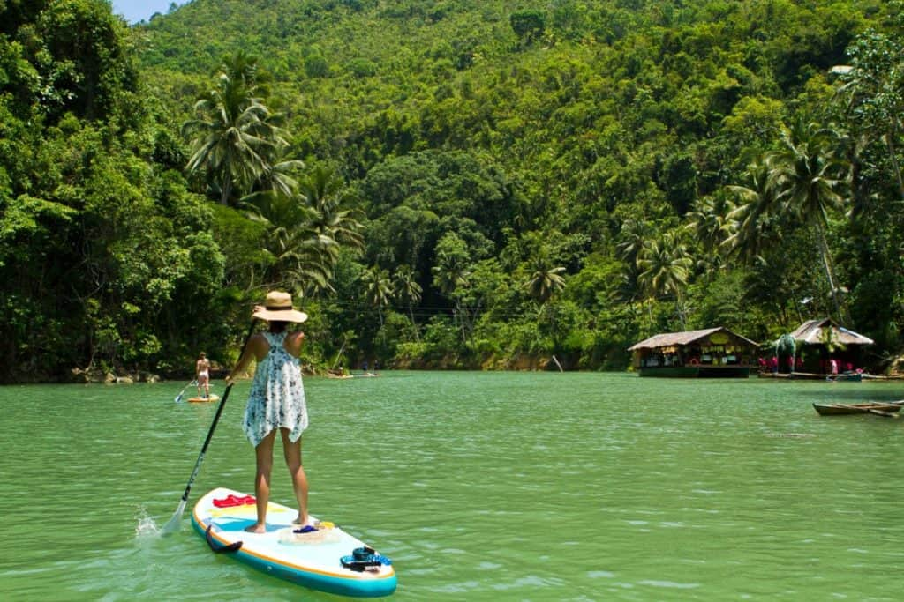
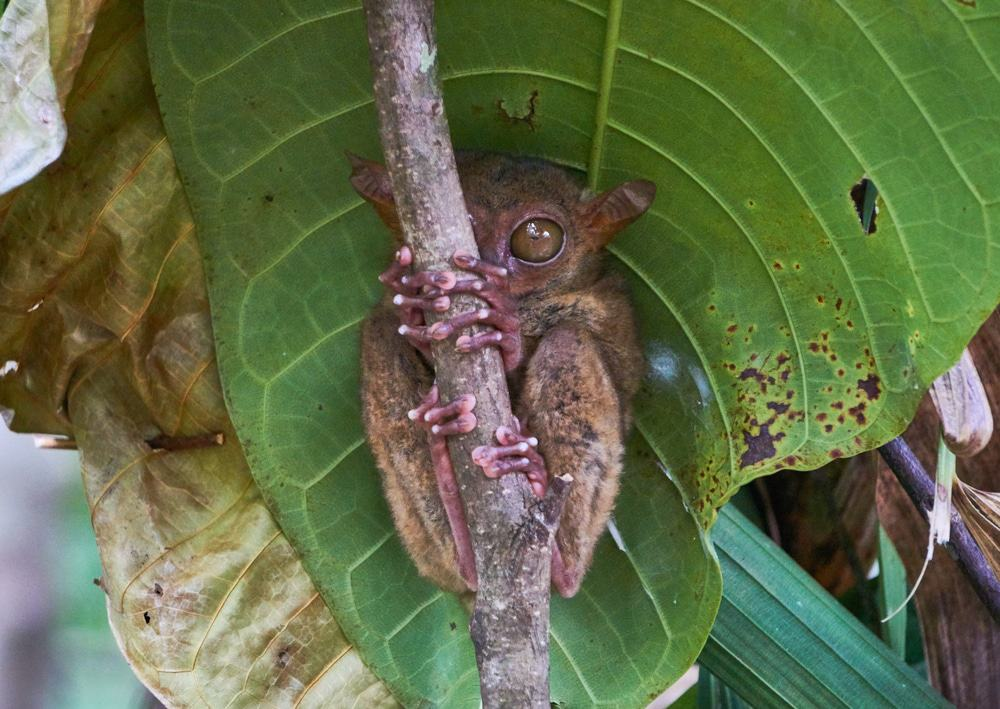
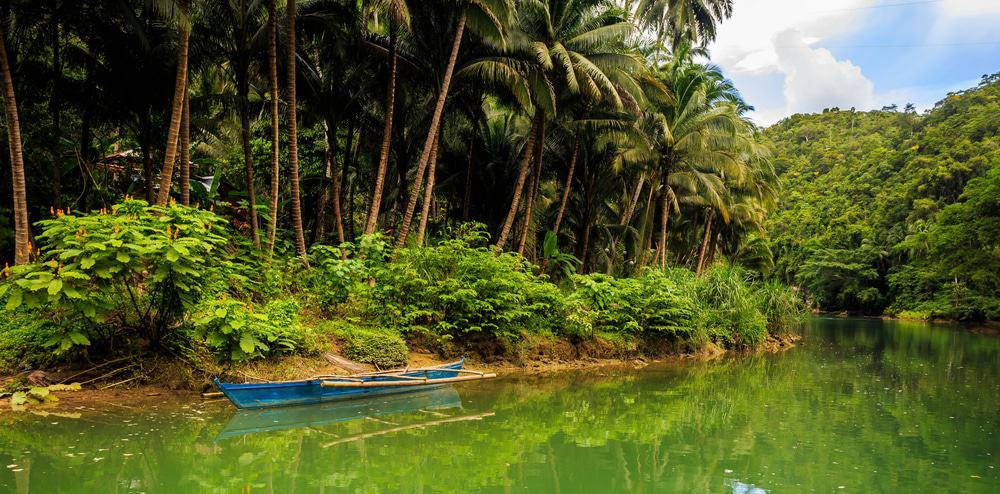
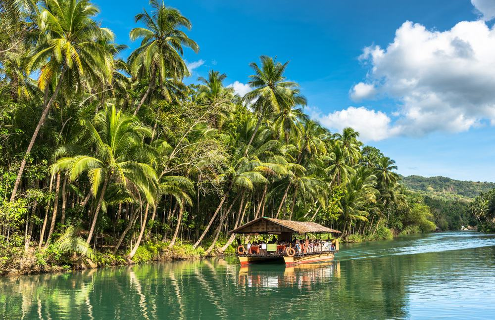
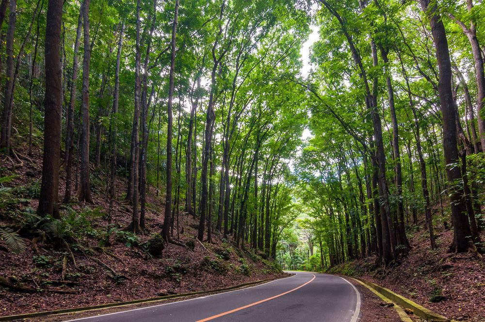
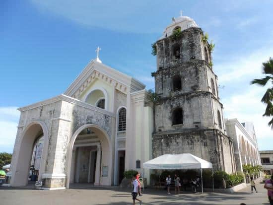

Bohol Itinerary:
Ultimate Travel Guide
You go to Manilla for city life; Boracay for beach life; and Bohol…that’s for jungle life. Expect a vacation filled with picturesque jungle adventures that will get your heart pounding and endorphins flowing
As the 10th largest island in the Philippines, you can imagine that there is a lot of ground to cover! In the center of the island, you’ll find the epicenter of nature fun with ziplining, waterfall climbing, cave exploring, and river cruising. South of the island you’ll get your fix of white sand beaches and cocktails with tiki straws. Also in the South, you’ll find the capitol city, Tagbilaran, which is filled with shopping malls, restaurants, bars, and guesthouses. You can also venture up north to mingle with locals who aren’t used to seeing tourists in their parts.
Traveling – it leaves you speechless,
then turns you into a storyteller
- Visit the Chocolate Hills
- Bohol Habitat Conservation Conservatory
- Bamboo Hanging Bridge
- River Paddle Boarding
- Tarsier Conservatory
- Take an unofficial cruise down Loboc River
- Official Loboc River Cruise
- Mahogany Forest
- Cathedral of San Jose
- Baclayon Churche
The Chocolate Hills are by far the most popular tourist attraction on Bohol Island and once you see it, it’s easy to understand why. Here lay hundreds of symmetrical green mountainous hills as far as the eye can see.
During the dry season, these hills take on a milk-chocolate color- hence “Chocolate Hills”. During the rainy season, they are lush and green.
Hire a motorbike taxi to take you and enjoy the winding roads with natural and cultural sights along the way.
Butterflies, spiders, centipedes, caterpillars, birds, and flowers- come witness a dense collection of natural beauty at the Bohol Habitat Conservation Conservatory.
Walk with a guide who will point out fauna indigenous to the island, persuade you to let bugs crawl on your arm, and take a few funny photos while you’re at it. Afterwards, stop by the restaurant and ice cream shop near the entrance to try some all-natural ice cream!
As the tour doesn’t take much time- maybe 30 minutes- it’s a great idea to make this one of many stops that you do in the area.
Visit the Bamboo Hanging Bridge where you’ll walk across a bamboo-weaved bridge over the slow flowing river. Each step on the bridge gives you a little tingle up your back as it feels quite delicate- but not to worry as the bridge is suspended with sturdy cables that won’t let you fall!
Once you cross the bridge, there are little souvenir shops to purchase magnets, bags, shirts, and more.

Journey down to the southwest corner of Bohol where you can embark on a day of paddle boarding. You’ll navigate through winding jungle passageways and around small waterfalls that offer a taste of nature in its purest form.
When you book a tour with SUP Tours Philippines or Loboc River Watersports, they’ll provide you with the paddle board, paddles, life jackets and a traditional Filipino lunch that is to die for.
Tarsiers- locally known as ‘mamag’- are an endangered species and would be close to extinction if it weren’t for the efforts of the Tarsier Conservatory in Bohol. Tarsiers are considered a “dependent” species meaning that they cannot thrive in the wild on their own. Every visit to the Tarsier Conservatory helps fund efforts and habitat to keep these cute little creatures alive.
When you visit the conservatory, you’ll see several of these little frog-fingers primates hanging out in the trees, sleeping under leaves and staring at you with their great big eyes. The tour only lasts 20 minutes because they don’t want to stress these Tarsiers out, but it’s totally worth it.

On the way to the Chocolate Hills, you’ll drive along side a small river surrounded by pure jungle. Locals have built fishing huts and small vendor stations selling snacks. Some of these locals own small wooden boats and are happy to take you for a ride. You can ask your driver to help you arrange a deal.
Once on the small local boat, the cruise down the river is absolutely breathtaking with tall palm trees and undisturbed jungle. It feels like a scene out of the book, “Where the Wild Things Are”.
At the end of the river is a fresh-water waterfall. Hop in with your clothes if you’d like. You can splash around in the shallows or duck under the waterfall for a nice back massage.
If you’d like to float down the Loboc River in comfort, than join the organized cruise selling tickets at the shore. The boat resembles a large floating house with a thatched roof and large dining room.
You’ll cruise down the river looking at the sights while enjoying a buffet style lunch. There is a live band that plays a collection of songs from around the world to appeal to the assembly of international guests on board.
Towards the end of the trip, your boat will stop by a platform full of Filipina women and children dressed in traditional clothing, singing and dancing for you. You may join in on the festivities and of course, a donation is welcome.

Rent a motorbike to experience the beauty that is the Mahogany Forest. The roads wind and bend making for a seriously fun ride. The roads are nicely paved and the traffic isn’t too heavy so even new riders can handle the journey.
Park your bike on the side of the road and meander up the hill to get a closer look at the massive roots that tangle together in the soil. With the sun peering through the trees and the fresh air surrounding you- you’ll get a feeling of what Bohol is all about.

You’ll quickly notice and discover that religion is deeply rooted in the culture of Filipino people. The Cathedral of San Jose is one of the largest in Bohol’s big city and is the most frequented by locals throughout the week and on Sunday for mass. No matter your religion, it’s interesting to visit the Cathedral of San Jose and witness how locals worship. You might even stumble upon a wedding or a baptism.
Like many historic structures in the city, this cathedral still has walls made of coral stone. While there have been some renovations, including new paint on the walls and a makeover of the paintings on the cathedral’s dome ceiling, the church’s original integrity has been impressively kept in tact for centuries.

Baclayon Church, also known as “The Immaculate Conception of the Virgin Mary Parish Church”, is the oldest Christian settlement in Bohol. Founded in 1596 and still standing, this Roman Catholic Church has been officially declared a ‘National Cultural Treasure’ that attracts thousands of tourists year round.
The church is a mysterious-looking building made from grey coral stone that has been weathered over the centuries. There are archways starting to crumble and pillars that have been eroded by the wind and typhoons as it sits next to the seaside. The 7.2 magnitude earthquake on Bohol in 2013 did some damage to the church but luckily left the museum unharmed. All in all, it makes for an interesting visit.